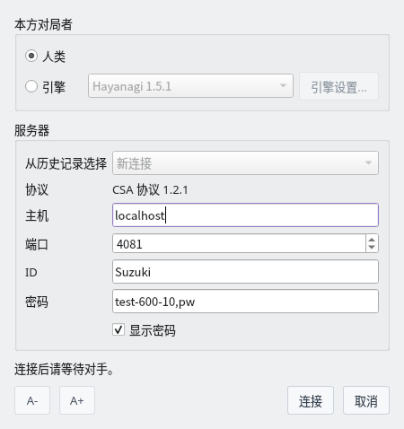
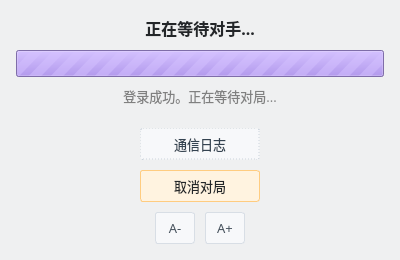
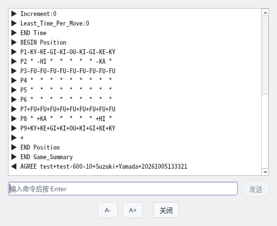
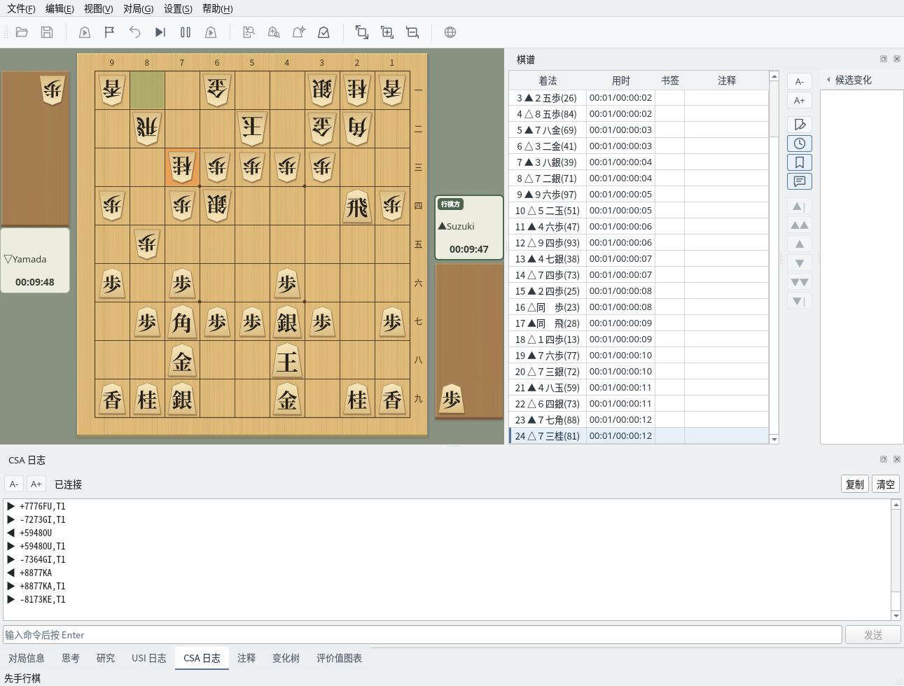
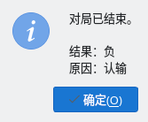

与支持 CSA 协议的服务器进行网络对局
截图在 Linux 上以简体中文界面拍摄。
设置服务器和本方对局者
选择“对局”→“网络对局 (CSA)…”打开网络对局对话框。仅在没有进行对局或解析时可用。
| 本方对局者 | 自己下棋时选择“人类”，让 USI 引擎下棋时选择“引擎”。引擎从“设置”→“引擎设置”中注册的引擎里选择，点击“引擎设置...”可以更改选项。 |
| 从历史记录选择 | 选择以前连接过的服务器（最多 10 个），会填入主机、端口和 ID。 |
| 协议 | 使用 CSA 协议 1.2.1 连接。 |
| 主机、端口 | 服务器的主机名或 IP 地址，以及端口（默认 4081）。 |
| ID、密码 | 登录服务器的 ID 和密码。密码不会保存到设置文件中。 |
有未填写的项目时，对话框下方会显示“请输入主机地址。”等提示，“连接”按钮无法点击。主机、ID 和密码中不能包含空格。

网络对局对话框：以人类身份连接本机 shogi-server 的设置
用时等对局条件由服务器决定，ShogiBoardQ 中没有相应设置。使用 shogi-server 时，在密码栏输入“对局名,密码”，以相同对局名登录的两人进行对局。
| 对局名 | 格式为“名称-用时-读秒”，时间以秒为单位。例如 test-600-10 表示用时 10 分钟、读秒 10 秒 |
| 加时（费舍尔） | 在末尾加 F，则每走一步加时，而不是读秒。例如 test-300-10F |
| 希望先手或后手 | 在对局名后加 -B（先手）或 -W（后手）。例如 test-600-10-B,pw |
在自己的电脑上运行 shogi-server 时，主机填 localhost，端口填 4081。
登录服务器并等待对手
点击“连接”会打开等待窗口，依次进行连接服务器、登录和等待对手。如果有未保存的棋谱，会先确认是否放弃。
找到对手后，服务器发来对局条件，ShogiBoardQ 自动同意并开始对局。点击“取消对局”可以停止等待并注销。

等待画面：登录成功，正在等待对手
点击“通信日志”会打开显示与服务器收发内容的窗口。▶ 表示接收的行，◀ 表示发送的行，LOGIN 的密码显示为“*****”。
连接期间可以在下方输入命令，按 Enter 或点击“发送”发给服务器。日志最多保留 5000 行。

通信日志：收到对局条件（Game_Summary）并以 AGREE 同意
在与普通对局相同的画面中下棋
以人类身份对局时，轮到自己时点击棋盘上的棋子下棋。对手的着法由服务器发来并反映到棋盘上，棋谱栏记录每步着法和用时。对局时钟显示服务器发来的用时。
画面下方的“CSA 日志”标签页可以查看收发内容和连接状态。“复制”复制整个日志，“清空”清除显示，也可以从输入栏发送命令。“对局信息”标签页记录对局者姓名和服务器的用时。

对局中：一边在 CSA 日志标签页查看与服务器的收发一边对局
把本方对局者设为“引擎”后，引擎按服务器的用时自动下棋。思考、USI 日志和评价值图表也与普通对局一样显示。
选择“对局”→“立即落子”可以中止引擎的思考，让它下出当前的最佳着法。引擎认输时向服务器发送认输，引擎入玉宣言时向服务器发送宣言。
轮到自己时，选择“对局”菜单中的“认输”“中断”“入玉宣言”会发送给服务器。入玉宣言在确认后发送。对手回合时无法发送。
胜负、超时以及入玉宣言是否成立由服务器判定。即使画面上的时钟归零，在服务器通知终局前对局仍会继续。不支持中断的服务器（如 shogi-server）可能把中断判为犯规。
对局结束后会显示结果和原因，棋谱栏记录终局（如“▲认输”）。棋谱不会自动保存，需要保留时请从“文件”菜单保存。终局后可以回放棋谱，或开始下一局网络对局。
对局中断开连接，或引擎无法返回着法时，对局以“中断”结束。

终局：结果“负”，原因“认输”
可以在支持 CSA 协议的服务器上进行网络对局